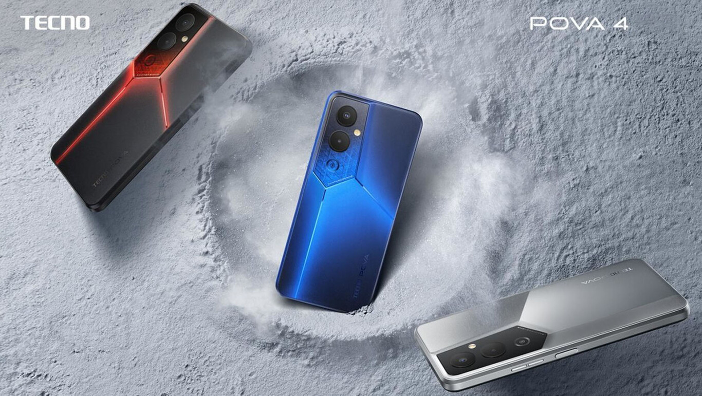

El dispositivo tecnologico de marca tecno fue anunciado en octubre de 2022 tiene unas especificaciones excelentes en rendimiento Este dispositivo cuenta con las siguientes caracteristicas: pantalla amoled de 6.66 pulgadas, maneja una taza de refresco de 90 hz(hercios) Su bateria esta compuesta por 6000 Mah con un cargador de 32 Watts y su procesador es Mediatek G99 Octa core
